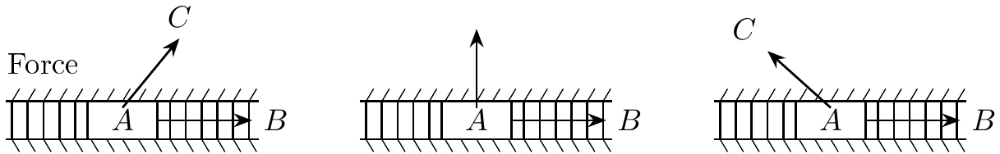
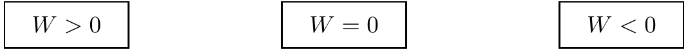
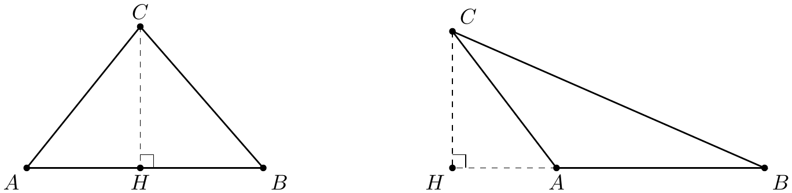
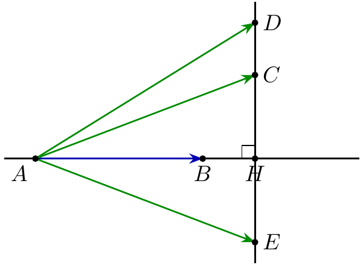
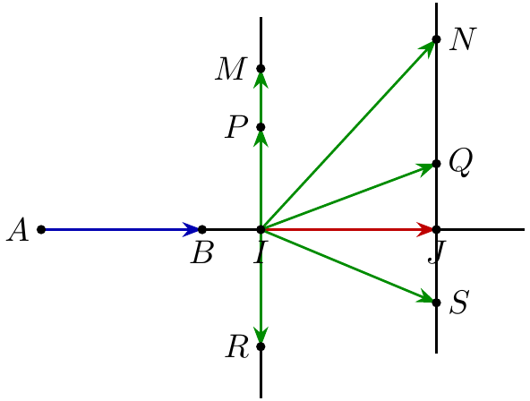
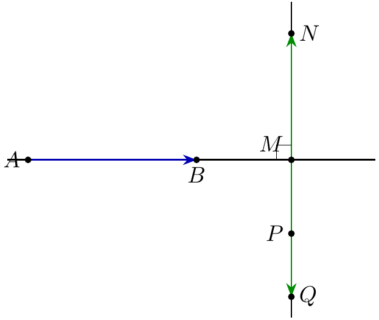
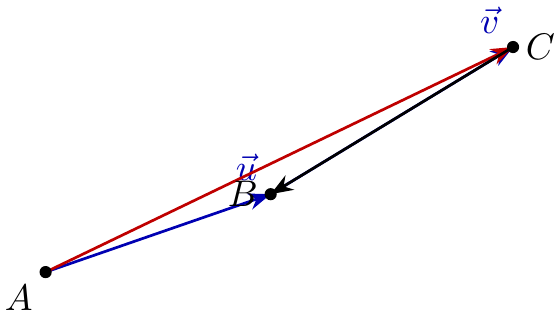

Chapitre 11 : Produit scalaire
Première spécialité · Chapitre 10 — Produit scalaire · cours de Frederik de Peyrelongue
I. Introduction du produit scalaire
Travail d'une force en physique


Le travail d'une force $\vect{AC}$ durant le déplacement de $A$ vers $B$ est un nombre $W$ :
- positif lorsque la force favorise le déplacement de $A$ vers $B$ ;
- négatif lorsque la force s'oppose au déplacement de $A$ vers $B$ ;
- nul lorsque la force ne contribue pas au déplacement de $A$ vers $B$.
Ce nombre $W$, qui est le travail de la force $\vect{AC}$, correspond au produit scalaire du vecteur $\vect{AC}$ et du vecteur $\vect{AB}$ : on le note
II. Différentes expressions du produit scalaire
Produit scalaire de deux vecteurs du plan
L'angle orienté formé par les vecteurs $\vec{u}$ et $\vec{v}$ se note $\left(\vec{u}\,,\vec{v}\right)$.
Soit $\vec{u}$ et $\vec{v}$ deux vecteurs du plan. On appelle produit scalaire de $\vec{u}$ et $\vec{v}$, et on note $\vec{u}\cdot\vec{v}$, le nombre réel défini par
Produit scalaire et projection orthogonale
Soit $\vect{AB}$ et $\vect{AC}$ deux vecteurs du plan. On note $H$ le projeté orthogonal du point $B$ sur la droite $(AC)$.
- Si $\vect{AC}$ et $\vect{AH}$ ont même sens, alors $\vect{AB}\cdot\vect{AC}=AC\times AH$.
- Si $\vect{AC}$ et $\vect{AH}$ ont des sens opposés, alors $\vect{AB}\cdot\vect{AC}=-AC\times AH$.
- Si $\vect{AB}$ et $\vect{AC}$ sont orthogonaux, alors $\vect{AB}\cdot\vect{AC}=0$.

si $H$ est sur la demi-droite $[AB)$.
si $H$ n'est pas sur la demi-droite $[AB)$.
Le vecteur $\vect{AH}$ est le projeté orthogonal du vecteur $\vect{AC}$ sur le vecteur $\vect{AB}$.
Configuration 1 :

Configuration 2 :

Configuration 3 :

Produit scalaire et identité du parallélogramme
Dans le plan muni d'un repère orthonormé $\left(O\,;\vec{\imath}\,,\vec{\jmath}\right)$, on considère deux vecteurs $\vec{u}$ et $\vec{v}$. On cherche une expression simple de $\vec{u}\cdot\vec{v}$ en fonction des normes des vecteurs $\vec{u}$, $\vec{v}$ et $\vec{u}+\vec{v}$.
Soit $A$, $B$ et $C$ des points du plan tels que $\vec{u}=\vect{AB}$ et $\vec{v}=\vect{BC}$ ; alors $\vec{u}+\vec{v}=\vect{AC}$ (relation de Chasles).
En utilisant la formule d'Al-Kashi (démontrée dans l'activité 1) à l'angle $\left(\vect{BA}\,,\vect{BC}\right)$, on obtient :
Soit
Soit
Et donc

Produit scalaire dans un repère orthonormé
On considère deux vecteurs $\vec{u}$ et $\vec{v}$ de coordonnées respectives $(x\,;y)$ et $(x'\,;y')$ dans le repère orthonormé $\left(O\,;\vec{\imath}\,,\vec{\jmath}\right)$. Alors le produit scalaire des deux vecteurs est :
$\vec{u}\binom{2}{3}$ et $\vec{v}\binom{-1}{3}$ :
$\vec{u}\binom{5}{7}$ et $\vec{v}\binom{8}{-7}$ :
$\left(O\,;\vec{\imath}\,,\vec{\jmath}\right)$, on considère deux vecteurs $\vec{u}$ et $\vec{v}$ de coordonnées respectives $(x\,;y)$ et $(x'\,;y')$. On cherche une expression simple de $\vec{u}\cdot\vec{v}$ en fonction de ces coordonnées.
Comme
on a $\|\vec{u}\|^{2}=x^{2}+y^{2}$, $\|\vec{v}\|^{2}=x'^{2}+y'^{2}$ et $\vec{u}+\vec{v}\,(x+x'\,;y+y')$.
Donc
III. Propriétés du produit scalaire
Symétrie et bilinéarité du produit scalaire
On considère deux vecteurs $\vec{u}$ et $\vec{v}$ de coordonnées respectives $(x\,;y)$ et $(x'\,;y')$.
En utilisant la formule $\vec{u}\cdot\vec{v}=xx'+yy'$, on constate que le produit scalaire est symétrique :
Le produit scalaire est symétrique : pour tous les vecteurs $\vec{u}$ et $\vec{v}$, on a
Le produit scalaire est distributif par rapport à l'addition. Pour tous les vecteurs $\vec{u}$, $\vec{v}$ et $\vec{w}$,
Le produit scalaire est compatible avec la multiplication par un nombre réel : pour tout nombre réel $k$ et pour tous les vecteurs $\vec{u}$ et $\vec{v}$, on a
Remarque : les propriétés 1, 2 et 3 réunies constituent la bilinéarité du produit scalaire.
Norme et produit scalaire :
Identité remarquable :
- \[ \left(\vec{u}+\vec{v}\right)^{2} =\left(\vec{u}+\vec{v}\right)\cdot\left(\vec{u}+\vec{v}\right) =\vec{u}\cdot\vec{u}+\vec{u}\cdot\vec{v}+\vec{v}\cdot\vec{u}+\vec{v}\cdot\vec{v} =\vec{u}^{2}+2\,\vec{u}\cdot\vec{v}+\vec{v}^{2} =\|\vec{u}\|^{2}+2\,\vec{u}\cdot\vec{v}+\|\vec{v}\|^{2} \]
- \[ \left(\vec{u}-\vec{v}\right)^{2} =\left(\vec{u}-\vec{v}\right)\cdot\left(\vec{u}-\vec{v}\right) =\vec{u}^{2}-2\,\vec{u}\cdot\vec{v}+\vec{v}^{2} =\|\vec{u}\|^{2}-2\,\vec{u}\cdot\vec{v}+\|\vec{v}\|^{2} \]
- \[ \left(\vec{u}-\vec{v}\right)\cdot\left(\vec{u}+\vec{v}\right) =\vec{u}^{2}-\vec{v}^{2} =\|\vec{u}\|^{2}-\|\vec{v}\|^{2} \]
Orthogonalité et produit scalaire
On considère que le vecteur nul est orthogonal à tous les vecteurs du plan.
Rappel : un produit de facteurs est nul si, et seulement si, l'un des facteurs est nul.
On obtient donc le théorème suivant.
Deux vecteurs $\vec{u}$ et $\vec{v}$ sont orthogonaux si, et seulement si, $\vec{u}\cdot\vec{v}=0$.
Corollaire : deux vecteurs $\vec{u}$ et $\vec{v}$ sont orthogonaux si, et seulement si, $xx'+yy'=0$.
Colinéarité de deux vecteurs
Deux vecteurs $\vec{u}$ et $\vec{v}$ sont colinéaires s'ils ont même direction.
Deux vecteurs $\vec{u}$ et $\vec{v}$ sont colinéaires si, et seulement si, il existe un réel $k$ non nul tel que
Deux vecteurs $\vec{u}$ et $\vec{v}$ sont colinéaires si, et seulement si,
Avec